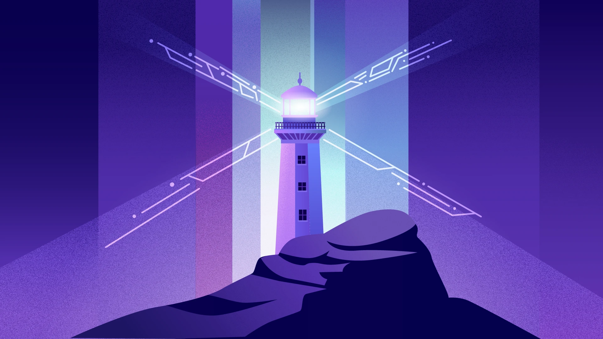

Keeper Skills Record · Carrowmore
See your own record against the jobs on offer: what you already have, what training you'd need, and where we need your help to fill gaps.
Browse keepers who have shared their record, sorted by name or by how close they are to ready for a role.
Signed in
In the full build this opens your view directly. For now, the prototype keeps its own sign-in.